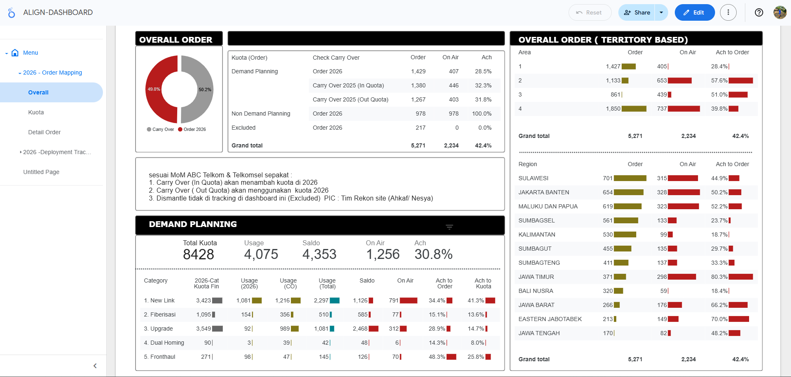

Riyanda Bambang Wicaksono
Customer Experience Analyst with expertise in transforming customer data into actionable insights to improve service quality and business performance.

Customer Experience Analyst with expertise in transforming customer data into actionable insights to improve service quality and business performance.
I am a Communication Science graduate with a professional background spanning sales, digital marketing, and customer experience within the telecommunications and technology industries.
Over time, I expanded my expertise into digital sales operations and partnership management, which allowed me to work closely with cross-functional teams and gain hands-on experience in campaign execution, performance monitoring, and customer engagement.
Currently, I work as a Customer Experience Analyst at PT Telekomunikasi Indonesia Tbk, where I develop dashboards, analyze service performance trends, and support data-driven decision-making to improve service quality and customer satisfaction.
Developed an interactive dashboard to monitor telecommunications order fulfillment, quota utilization, and regional deployment performance across multiple operational territories.



Key products onboarded:

Managing and analyzing large-scale datasets (millions of records), high-volume data processing and data quality management, complex data handling and performance optimization.
Managed end-to-end customer journey and after-sales processes for B2B clients.
Produced and maintained dashboards and regular reports to track progress, recurring issues, and weekly conversion metrics.
Advanced data processing & analysis
Led the end-to-end product onboarding and publishing process, overseeing pricing setup, inventory allotment, and availability scheduling, while creating clear and engaging product descriptions and marketing copy.
Campaign optimization & performance
Worked with stakeholders across sales, product, marketing, and operations to coordinate updates and resolve issues.
Experienced in using Jira to manage task backlogs, monitor sprint progress, and maintain clear documentation of issues, enhancements, and project requirements across multiple teams.
Bahasa Indonesia: Native
English: Advanced (Professional Working Proficiency)